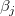
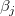

内容 |
LabTalkで使用する多項式フィット
必要なOriginのバージョン: Origin 9.0
1. fitpoly iy:=(1,2) polyorder:=2 fixint:=0 intercept:=0 coef:=3 oy:=(4,5);
| 表示 名 |
変数 名 |
I/O と データ型 |
デフォルト 値 |
説明 |
|---|---|---|---|---|
| 入力 | iy |
入力 XYRange |
<active> |
この変数は入力データ範囲を指定します。 |
| 多項式次数 | polyorder |
入力 int |
2 |
この変数は、フィットする多項式の次数を指定します。 |
| 切片を固定 | fixint |
入力 int |
0 |
1の値（ダイアログでチェックされている状態）は、切片を固定します。 |
| 固定切片の値 | intercept |
入力 double |
0 |
固定する切片の値を指定します。fixint が 0 のときこ、この値は無視されます。 |
| 多項式係数 | coef |
出力 vector |
<optional> |
これは多項式の係数を受け取る列またはデータセット変数を指定します。例えば、coef:=3 の場合、これは多項式の係数を3番目の列に出力します。 |
| 出力 | oy |
出力 XYRange |
<optional> |
多項式フィット曲線を出力する範囲を指定します。 |
| ポイント数 | N |
出力 int |
<unassigned> |
フィットのポイント数を受け取る変数を指定します。 |
| 調整済み残差平方和 | AdjRSq |
出力 double |
<unassigned> |
これは調整済み残差平方和(R^2)を受け取る変数を指定します。 |
| 決定係数 (R^2) | RSqCOD |
出力 double |
<unassigned> |
決定係数(R^2)を受け取る列あるいはデータセット変数を指定します。 |
| 多項式係数の誤差 | err |
出力 vector |
<optional> |
多項式係数の誤差を受け取る列あるいはデータセット変数を指定します。 |
多項式回帰は、指定したデータセットを次のモデルでフィットします。
ここで は係数、 は誤差項です。誤差項は従属変数の予期しない、または、説明できない変動を表します。ランダムな変数 の平均が0に等しくなるということです。
パラメータは重み付けした最小二乗法を使って推定されます。これは独立変数の範囲内で理論曲線と測定データポイント間の差の二乗和を最小化する方法です。フィットの後、モデルは仮説検定を使って、残差をプロットして評価できます。
より高い次数の多項式が従属変数に対して最も効果的であることに注目すべきです。逆に、高い次数(4以上)のモデルは、係数値の精度に敏感で、係数値の少しの違いでも、計算されるy値が大きく変わってしまいます。デフォルトで、多項式フィットの結果は5桁で丸め処理されます。手動でこれらのレポートワークシートの値をフィット曲線に表示する場合、丸め処理による小さな桁落ちは、高次項に影響し、モデルが不適切だという誤った結論を導いてしまう恐れがあります。手動で、最適なフィットパラメータを使った計算を実行するには、丸め処理した値ではなく、完全な精度の値を使ってください。Originは、レポートする値を5桁にしてますが、これは表示のためのものです。Originは、ユーザが他のデータ型に指定しなければ、常に完全な精度(double(8))で数学演算を行っています。詳細は、Originでの数値形式をご覧ください。
一般的に言えば、連続した関数は比較的高い次数の多項式モデルでフィットできます。しかし、より高い次数にしても実用上意味がないかもしれません。
他のサンプルについては、XFスクリプトダイアログ(F11を押す)をご覧下さい。
回帰モデル
与えられたデータセット (xi, yi ), i = 1,2,...n, に対して、( X は独立変数、Y は従属変数) 次の形式のモデルを使ってデータに多項式回帰を実行します。
ここで、k は次数で、Originでは、10より小さい正の数です。誤差項 は、独立しており、正規分布 N (0,  )に従うものとします。
)に従うものとします。
モデルをフィットするため、残差は次のようになります。
平均値が0、分散が の正規分布です。その後、パラメータ の 最大尤度推定は はカイ二乗値を最小化することによって計算でき、次のように定義されています。
誤差が重み付けとして取り扱われる場合、カイ二乗を最小化する数式は次のように記述することができます。
そして:
ここで、 は測定誤差です。それらが不明な場合は、全てを1に設定します。
は測定誤差です。それらが不明な場合は、全てを1に設定します。
行列計算による係数の推定
推定される係数の計算は行列で計算できます。最初に、行列の形式で回帰モデルを書き換えます。
ここで、
ベクターデータ B の推定値は、線形方程式の解で、次の式で表すことができます。
ここで は X の転置行列になります。
多項式回帰での推測
多項式フィットのANOVAは以下の表のようにまとめられます。
|
df |
平方和 |
二乗平均 |
F 値 |
Prob > F |
|
|
モデル |
k |
SSreg = TSS - RSS |
MSreg = SSreg / k |
MSreg/ MSE |
P値 |
|
誤差 |
n* - k |
RSS |
MSE = RSS / (n*-k) |
||
|
合計 |
n* |
TSS |
（Note:切片がモデルに含まれてる場合、n*=n-1 です。それ以外は、 n*=n で平方和の合計は未補正となります。
ここで、平方和の合計TSSは、
そして、残差平方和 (RSS) または平方誤差和 (SSE)が、各データポイントとフィット曲線との垂直方向での差の実際の平方和となります。これは次式のように定義できます。
ANOVA表に、 F検定の結果が現れます。F 検定の帰無仮説は、すべての部分係数が0に等しいということです。例えば、
 :
: =
=  =
=  = ...= = 0
= ...= = 0
つまり、対立仮説は、次のようになります。
'':少なくとも一つは 0
0
計算されたF値を使って、対応する帰無仮説を棄却するかどうかを決めることができます。与えられた有意水準  では、F > の場合、または、F (計算された p 値) の有意性が
では、F > の場合、または、F (計算された p 値) の有意性が  よりも小さい場合に
よりも小さい場合に を棄却することができます。
を棄却することができます。
推定のために、次の式で計算される一部の勾配の標準誤差を知る必要があります。
ここで は、(X’X)-1のj 番目の対角要素となります。 は、次式で計算される残差標準偏差 (「std dev」、「推定の標準誤差」、「root MSE」のようにも呼びます) です。
回帰の前提から、t検定を実行して、帰無仮説と対立仮説を使って回帰係数を求めます。
 : = 0, : 0,
: = 0, : 0,
t値は次のように計算できます。
t値を使って、帰無仮説を棄却するかどうかを調べることができます。与えられた有意水準  では、 |t| > の場合、または、p 値が
では、 |t| > の場合、または、p 値が  よりも小さい場合に
よりも小さい場合に  を棄却することができます。
を棄却することができます。
信頼区間と予測区間
特定の値 xp の場合、x=xpにおけるyの平均値の100(1- )% 信頼区間は、
)% 信頼区間は、
そしてx=xpにおけるyの平均値の100(1- )%予測区間は、
)%予測区間は、
決定係数
フィットの良さは、決定係数(COD) R2で評価でき、次の式で計算できます。
補正 R2 は、自由度の R2 値を調整するのに使用されます。これは次式のように定義できます。
相関係数 R値は、R2 の平方根を使って計算できます。
共分散行列と相関行列
多項式回帰の共分散行列は以下によって計算されます。
2つのパラメータ間の相関は、
1.Bruce Bowerman, Richard T. O'Connell.1997.Applied Statistics:Improving Business Processes.The McGraw-Hill Companies, Inc.
2.Sanford Weisberg.2005.Applied Linear Regression, 2nd ed. John Wiley & Son, Inc., Hoboken, New Jersey.
3.William H. Press.; et al.2002.Numerical Recipes in C++, 2nd ed. Cambridge University Press:New York.